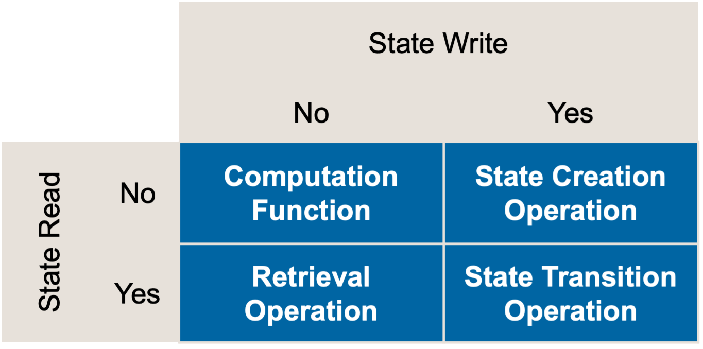
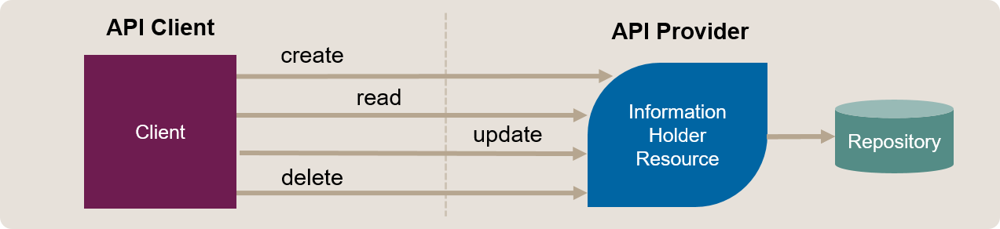
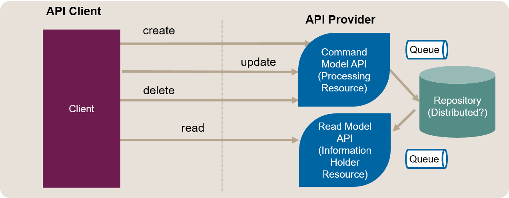

Segregate Commands from Queries
also known as: Introduce Command Query Responsibility Segregation (CQRS)
Context and Motivation
An endpoint cohesively bundles all operations dealing with a particular domain concept. Some of these operations modify the application state on the API provider side (write access), others only retrieve data (read access). Some but not all read operations (following the Retrieval Operation pattern) offer declarative query parameters and return rich, multi-valued response structures causing provider-side workload.
As an API provider, I want to serve queries and process commands separately so that I can optimize the respective read and write model designs independently.
Stakeholder Concerns (including Quality Attributes and Design Forces)
- #performance and #scalability
- Workload such as computation effort (for instance, loading data from data stores, filtering, and formatting it) and high data volumes may make certain operations expensive. Expensive operations (for instance, complex queries) should not slow down cheaper operations (for instance, single updates of single attribute values).
- #agility and #development-velocity
- Read and write operations may evolve at different speeds. For example, data analytics queries may often change, driven by client demand and insights just gained.
- #flexibility to change the API vs. #simplicity
- Keeping read and write operations together is easy to understand and brings functional endpoint #cohesion. Separating these types of operations increases the ability to change rapidly and flexibly.
- #security, #data-privacy
- Read and write operations might have different protection needs. Few user roles, for instance, are usually authorized to update master data; many or all user roles may read it. If there are two separate endpoints for read and write access, it might be easier to fine tune the Confidentiality, Integrity and Availability (CIA) rules and related compliance controls. See the OWASP API Security Top 10 for risks and related advice.
Initial Position Sketch
The operations offered by an API endpoint fall into four categories, depending on whether they read/write state. Each target quadrant is represented by a Microservice API Pattern (MAP) [Zimmermann et al. 2020]:

- Computation Functions derive a result solely from the client input, neither reading nor writing server-side state.
- State Creation Operations initialize some new state at the API endpoint (for instance, by creating an implementation resource such as a customer record). If required, a minimal amount of state can be read, for example to ensure the uniqueness of identifiers.
- Retrieval Operations are read-only queries that clients use to fetch data.
- State Transition Operations update server-side state. This includes full or partial replacement and also deletion of the state.
These operations are often implemented as CRUD (create, read, update, delete) resources:

The refactoring targets are:
- An endpoint such as an Information Holder Resource (for instance, realized as an HTTP resource identified by a URI).
- Two or more create, read, update, delete operations of this endpoint that have read and write semantics, respectively. These operations can be realized by HTTP verbs/methods such as POST, GET, PUT/PATCH, DELETE supported by a resource that is identified by a URI.
Smells / Drivers
- High latency/poor response time
- Poor performance may be caused by too tight operation coupling. Expensive queries slow down the execution of write operations (for instance, state creation and state transition operations). Isolation is insufficient.
- Feature/release inertia a.k.a. stale roadmap
- An endpoint provides both read and write operations; there might be many read, but only few write operations. These types of operations evolve at different speeds and/or by distinct development teams; for instance, new query options in a customer relationship management application may be introduced in every two-week iteration in response to frequently arriving customer inquiries and client insights while commands evolve with a frequency imposed by a master data management or Enterprise Resource Planning (ERP) package in the backend. They also differ in the amount of design and test work required; write operations change state and therefore may require consistency management and nontrivial “given” preconditions and “then” postconditions when testing. The conceptual integrity of the endpoint and all of its read and write operations has to be preserved during each evolution step/stage. As a result, it takes longer than desired to introduce new features, new queries in particular.
- Too coarse-grained security or data privacy rules
- The security and data protection requirements of commands and queries differ. They are specified on the endpoint rather than the operation level. Hence, generalization has to take place. This bears risks such as under-specification and over-engineering.
Instructions (Steps)
CQRS is an architectural pattern that increases flexibility but adds complexity. It can be introduced in the following steps:
- Group endpoint operations by their purpose and impact on provider-side state: read-only, write-only, read-write, neither-read-nor-write.
- Apply the Extract Endpoint refactoring to move the read-only Retrieval Operations to a new endpoint, the Read Model API.
- Adjust the API implementation to match the outcome of Steps 1 and 2. Consciously decide for a data store serving both endpoints, the new Read Model API and the already existing endpoint that has become a Write Model API. Distributing this data store is a further option, but not mandatory. When distributing data stores, choose suited data replication and consistency management solutions (for example, how current/fresh should the replicated data be?). Include all data stores in the backup and recovery strategy (be aware of the BAC theorem, see hints below).
- Test “sunny day scenario” as well as “edge” cases and error situations such as slow and temporarily failing network and replication conflicts.
- Update the API Description including the technical API contract and supporting documentation. Provide teaching material that covers migration from the old domain concept-oriented API to the new command-query API: What has to be changed in the API client? How do the Service Level Agreements change?
The operation responsibility Computation Function neither reads nor writes provider side application state.1 Such operations may appear in command endpoints as well as query endpoints; they might also go to separate stateless endpoints (“Command Computation Responsibility Segregation”).
Target Solution Sketch (Evolution Outline)

Example(s)
The example in Extract Endpoint actually shows an introduction of CQRS:
Service PublicationManagementFacade {
// a state creation/state transition operation:
@PaperId add(@PublicationEntryDTO newEntry);
// retrieval operations:
@PublicationArchive dumpPublicationArchive();
Set<@PublicationEntryDTO>lookupPublicationsFromAuthor(String writer);
String renderAsBibtex(@PaperId paperId);
// computation operations (stateless):
String convertToBibtex(@PublicationEntryDTO entry);
This single publication management endpoint can be separated into two in this API design:
Service PublicationManagementCommandFacade {
// a state creation/state transition operation:
@PaperId add(@PublicationEntryDTO newEntry);
// computation operations (stateless):
String convertToBibtex(@PublicationEntryDTO entry);
}
Service PublicationManagementQueryFacade {
// retrieval operations:
@PublicationArchive dumpPublicationArchive();
Set<@PublicationEntryDTO>lookupPublicationsFromAuthor(String writer);
String renderAsBibtex(@PaperId paperId);
}
This API design achieves command-query segregation at the expense of distributing the two operations related to BibTeX to two different endpoints, which couples the two endpoints from a domain design standpoint (to some extent).
Hints and Pitfalls to Avoid
When deciding to separate commands from queries by introducing the CQRS pattern:
- Replicate data as needed. Decide between strict and eventual consistency consciously.
- Be aware of the implications of the Backup Availability Consistency (BAC) theorem. The BAC theorem states that it is not possible to backup and restore across services consistently without degrading availability.
- Acknowledge that read models and event representations sent as Data Transfer Objects (DTOs) over APIs increase the data coupling between clients and providers. If multiple clients use the same DTOs, they might indirectly also be coupled consequently.2
- Consider asynchronous, queue-based messaging to update the read model (or the write/command model) after a change caused by an API command (or a backend action). This integration style supports throttling and is able to guarantee message delivery (depending on the quality-of-service properties chosen for a particular queue).
- Consider applying Event Sourcing as one of several options when segregating commands from queries. An event source stores a series of state changes in chronological order, but does not store the resulting final/current state. In such designs, it often makes sense to take snapshots of the current state periodically or upon client request; such snapshots can then be stored separately from the events and provided to clients via additional API calls.
Related Content
This pattern refines Extract Endpoint in the context of CQRS. Hence, Merge Endpoints reverts it. Introduce Pagination and Add Wish List might be alternative options to improve query performance.
Information Holders of various types in MAP are related patterns that may benefit from command-query segregation. In MAP, queries are represented as Retrieval Operations; commands are State Creation Operations or State Transition Operations.
Michael Ploed provides a comprehensive introduction to CQRS and event sourcing on slideshare. A presentation video by Michael Ploed is available as well. Also see an online article by Ueli Dahan for examples and a discussion of pros and cons. The Context Mapper website provides a tutorial “Event Sourcing and CQRS Modeling in Context Mapper”.
References
Zimmermann, Olaf, Daniel Lübke, Uwe Zdun, Cesare Pautasso, and Mirko Stocker. 2020. “Interface Responsibility Patterns: Processing Resources and Operation Responsibilities.” In Proc. Of the European Conference on Pattern Languages of Programs. EuroPLoP ’20. Online.
-
unlike State Creation Operation, Retrieval Operation, and State Transition Operation ↩
-
This cannot be avoided entirely in any Published Language in an API; the coupling still exists but becomes less obvious when commands and queries are separated (as they still work on the same domain concepts). If the two endpoints evolve autonomously (independently of each other, that is), the models will eventually deviate further and further (which to some extent is desired). Over time, this may cause technical debt and hidden dependencies that counter the original motivation of the pattern and the refactoring. ↩